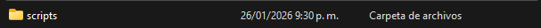
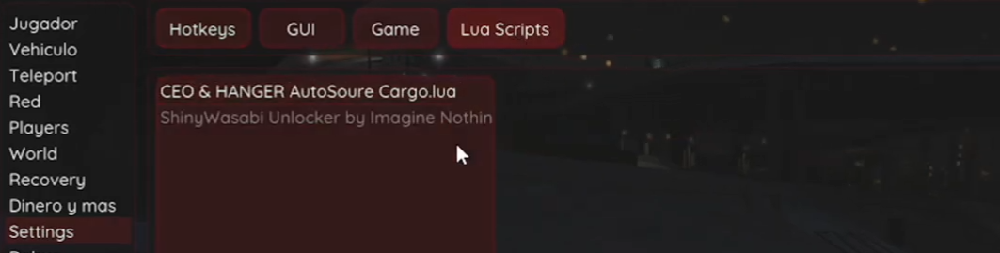
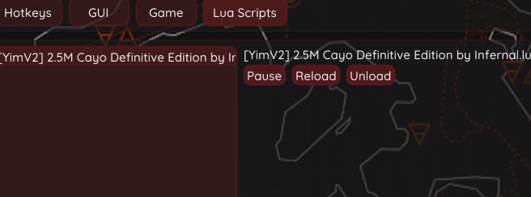

Scripts
Hola, aquí encontrarán los scripts, los cuales son agregados que funcionan con el mod menu; estos facilitarán algunos procesos que hace el mismo mod menu.
IMPORTANTE: Para colocar los scripts, ya se debe haber inyectado una vez mínimo el mod menu.
Recordar: No abusar de ningun script para reducir el riesgo de ban.
El archivo RAR a descargar contiene los scripts para Enhanced y Legacy. (Contraseña al descomprimir: 1234)
Pasos:
- Paso 1: Abren con la tecla windows + R, escribren %appdata% y le dan aceptar.
- Paso 2: Buscan y abren la carpeta del Yim Menu.
- Paso 3: Buscan y abren la carpeta de scripts 
- Paso 4: Colocan su respectivo script, ejemplo de como quedarían ya en esta carpeta.
- Paso 5: Ya colocado, nomás deben encender su mod menu dependiendo de su versión, usando los tutoriales que coloqué en los apartados de su respectiva versión, y cargarlos aquí (Dandole click); un ejemplo en el Yim Menu de Enhanced. 
- Paso EXTRA: En algunos scripts se deben cargar para que funcionen, se debe darle "Unload" para que funcionen. Ejemplo en cayo 2.5 millones se debe hacer y si no carga solo salir del kosatka para ver que funciono. 


Aclaraciones para el cayo 2.5 millones:
Recordar: El botín principal se puede agarrar; estos son botines secundarios. Además si gustan pueden hacerlo cada 5 minutos ustedes solos como maximo recomiendo 3 veces y si se hace con amigos haganlo cada 40 min (Si son con los amigos que hicieron el golpe al cayo anteriormente)
IMPORTANTE: Para que funcione, no se debe agarrar la caja fuerte del piso de arriba.
- Botin 1 Solo jugador: 2 cuadros.
- Botin 2 Jugadores: Coca y un cuadro cada uno. Porcentajes: 50%|50%
- Botin 3 Jugadores: 2 personas coca y un cuadro, el que queda un cuadro y el resto de bolsa con dinero. Porcentajes: 30%|35%|35%
- Botin 4 Jugadores: 2 personas coca y un cuadro, uno solo oro y el que queda solo un cuadro junto al dinero para llenar su bolsa. Porcentajes: 25%|25%|25%|25%
Pago total de cada golpe:
- 1 Jugador: 2.5 millones
- 2 Jugadores: 5 millones
- 3 Jugadores: 7.5 millones
- 4 Jugadores: 10 millones
Importante: Estos pagos no son exactos y pueden variar.